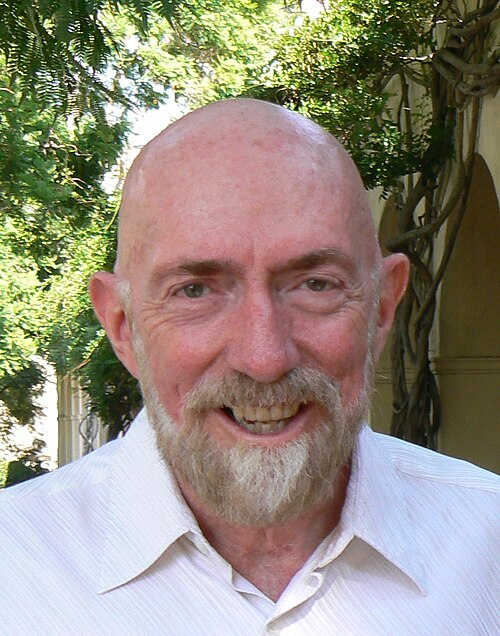
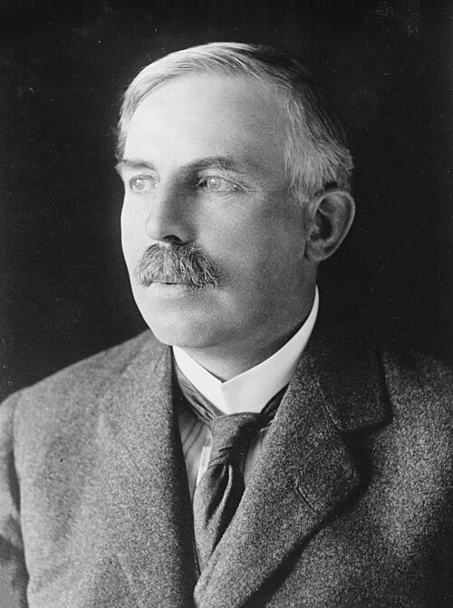
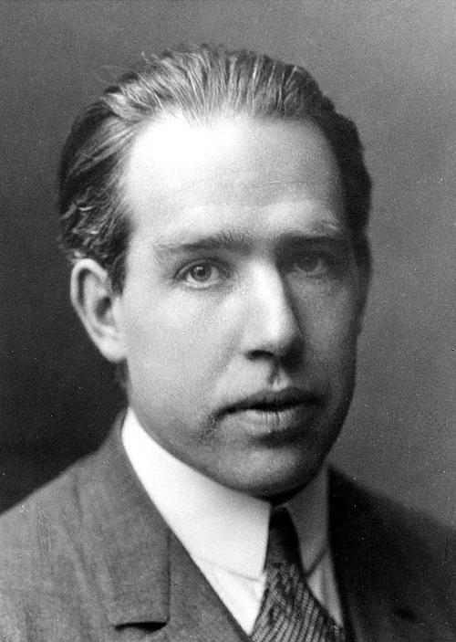
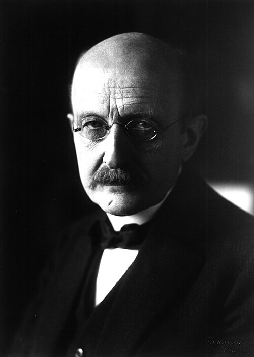
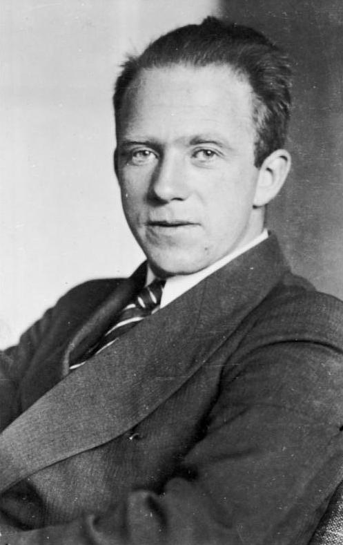
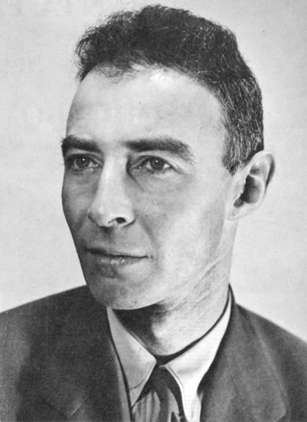
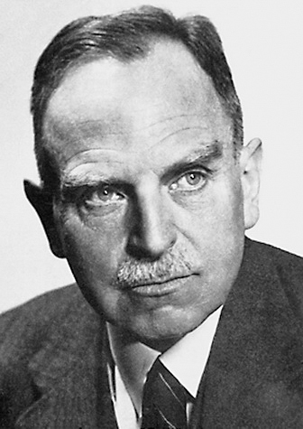
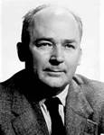

Учёные, оживившие науку в кино
Эти великие физики своими открытиями вдохновили создателей фильмов и помогли нам лучше понять законы Вселенной. Их теории и работы легли в основу научных разборов на нашем сайте.

Альберт Эйнштейн
1879–1955Великий физик-теоретик, создатель общей теории относительности. Его работы о гравитации, искривлении пространства-времени и формуле E=mc² стали основой для фильмов «Интерстеллар» и «Оппенгеймер».

🌌Кип Торн
1940–н.в.Американский физик-теоретик, лауреат Нобелевской премии за открытие гравитационных волн. Был научным консультантом фильма «Интерстеллар» и помог создать максимально реалистичную модель чёрной дыры.

Исаак Ньютон
1643–1727Основоположник классической механики. Его три закона движения объясняют, как движутся пули, снаряды и все тела во Вселенной. В фильме «Особо опасен» законы Ньютона показывают, почему изогнутая пуля — это миф.

⚛️Эрнест Резерфорд
1871–1937Британский физик, открывший атомное ядро и предложивший планетарную модель атома. Его работы объясняют, почему уменьшение человека в фильме «Человек-муравей» невозможно — атомную структуру нельзя сжать без разрушения.

🔬Нильс Бор
1885–1962Датский физик, разработавший квантовую модель атома с электронными оболочками. Его работы легли в основу квантовой физики, которая объясняет, почему уменьшение человека до размеров муравья противоречит законам природы.

⚡Макс Планк
1858–1947Немецкий физик, основатель квантовой теории. Его открытие квантов энергии заложило основы квантовой механики. В фильме «Человек-муравей» законы квантовой физики показывают, почему уменьшение человека — научная фантастика.

🔮Вернер Гейзенберг
1901–1976Немецкий физик, один из создателей квантовой механики. Сформулировал принцип неопределённости. Его работы показывают, что на квантовом уровне невозможно точно определить одновременно положение и импульс частицы.

☢️Роберт Оппенгеймер
1904–1967Американский физик, научный руководитель Манхэттенского проекта. Его работа над созданием атомной бомбы стала центральной темой фильма «Оппенгеймер». Он сыграл ключевую роль в развитии ядерной физики.

⚛️Отто Ган
1879–1968Немецкий химик, открывший ядерное деление урана вместе с Фрицем Штрассманом. Это открытие стало основой для создания атомной бомбы и подробно показано в фильме «Оппенгеймер».

🔬Фриц Штрассман
1902–1980Немецкий химик, который вместе с Отто Ганом открыл ядерное деление. Их совместная работа заложила основу для цепной ядерной реакции и создания атомного оружия.